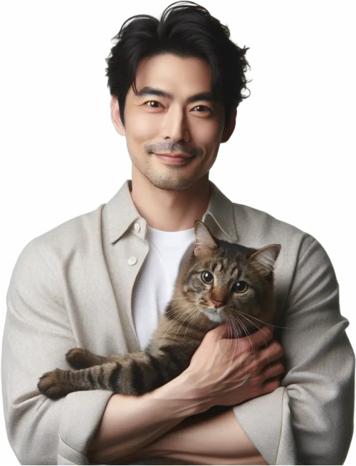
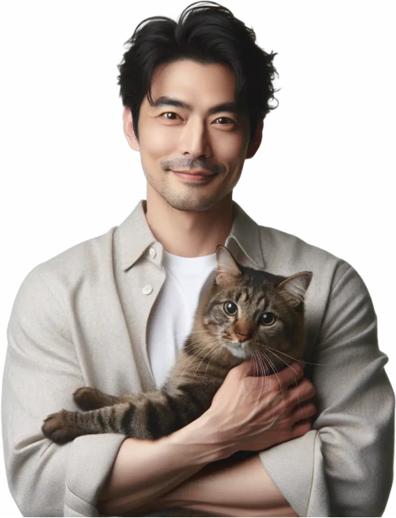

護航台灣幸福經濟 從照顧每一隻貓咪開始
我堅信，藉由推動更完善的貓咪福利和相關政策，更是間接地投資於台灣的未來。畢竟，民眾的身心健康與工作熱情是推動經濟的核心動力。透過完善的貓咪福利政策，為台灣的 GDP 經濟帶來巨大效益。
因此，我期望能在立法院內推進這些政策，確保每一隻貓咪都能得到他們應有的照顧，同時也為台灣的經濟發展助一臂之力。

 



我堅信，藉由推動更完善的貓咪福利和相關政策，更是間接地投資於台灣的未來。畢竟，民眾的身心健康與工作熱情是推動經濟的核心動力。透過完善的貓咪福利政策，為台灣的 GDP 經濟帶來巨大效益。
因此，我期望能在立法院內推進這些政策，確保每一隻貓咪都能得到他們應有的照顧，同時也為台灣的經濟發展助一臂之力。


26
DEC.炎炎夏日的周六，我走進了台北寵物論壇，帶著一副貓耳髮箍，決定要全力宣傳「貓咪至上」的理念！我相信，我們的都市中，每一隻貓咪都應該有自己的 VIP 休憩空間。

24
DEC.街上氣氛真的很棒，從小孩到大人，甚至有些狗狗朋友都帶著貓耳來找我握手，真的太可愛了！這次的活動不僅讓我看到大家的熱情，更加堅定了我推進「貓咪友善環境」政策的決心。

20
DEC.活動三消息內容：今天的收容所不再是一片寂靜。為了讓更多人認識到這裡的毛孩子，我們舉辦了一場前所未有的「模特兒走秀」！
26
DEC.炎炎夏日的周六，我走進了台北寵物論壇，帶著一副貓耳髮箍，決定要全力宣傳「貓咪至上」的理念！我相信，我們的都市中，每一隻貓咪都應該有自己的 VIP 休憩空間。
街上氣氛真的很棒，從小孩到大人，甚至有些狗狗朋友都帶著貓耳來找我握手，真的太可愛了！這次的活動不僅讓我看到大家的熱情，更加堅定了我推進「貓咪友善環境」政策的決心。
活動三消息內容：今天的收容所不再是一片寂靜。為了讓更多人認識到這裡的毛孩子，我們舉辦了一場前所未有的「模特兒走秀」！
政策一
政策二
政策三
選擇捐款方案

親愛的鄉親，每一位市民的意見都是我們社區前進的原動力。無論大小事，我都誠摯希望聽到您的建議。分享您的想法，一同為我們的未來打造更美好！